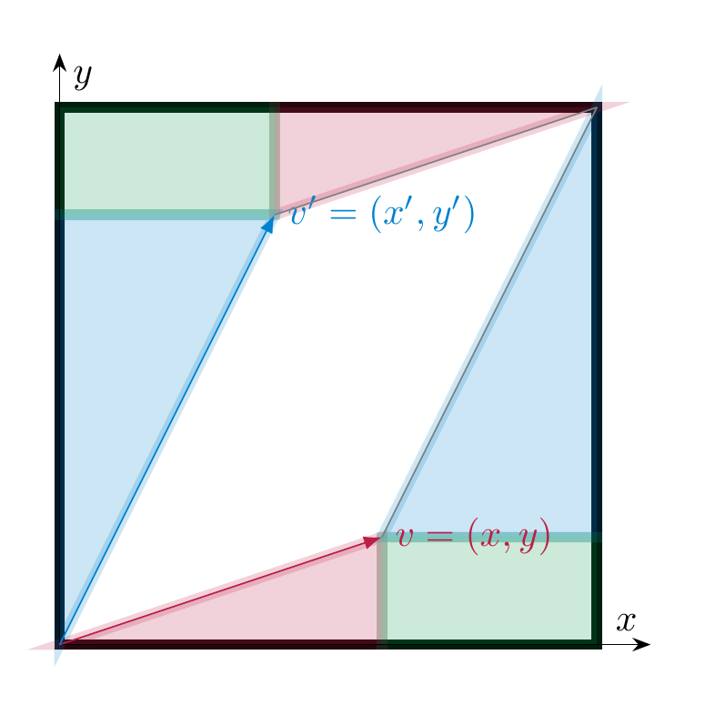
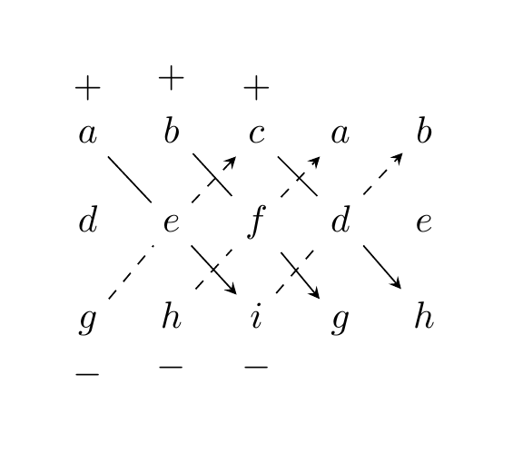

Determinants¶
Determinants of \(2 \times 2\)-matrices¶
We begin with the definition of determinants of \(2 \times 2\)-matrices.
Definition 5.1
Let
be a \(2 \times 2\)-matrix. The determinant of \(A\) is defined as
Example 5.2
-
\(\det \left ( \begin{array}{cc} 4 & 7 \\ 2 & -1 \end{array} \right ) = 4 \cdot (-1) - 7 \cdot 2 = -18\).
-
\(\det \left ( \begin{array}{cc} 1 & r \\ 0 & 1 \end{array} \right ) = 1 \cdot 1 - r \cdot 0 = 1\). In particular, \(\det {\mathrm {id}}_2 = 1\).
-
Consider a matrix \(A = \left ( \begin{array}{cc} a & b \\ ra & rb \end{array} \right )\) whose second column is a multiple of the first (so that the columns are linearly dependent). Then
According to Corollary 4.94, \(A\) is not invertible. This is an example of the fact alluded to above (cf. Theorem 5.15).
Determinants carry the following geometric meaning. Recall that the absolute value of a real number \(r\) is defined as
For example, \(|4| = 4\) and \(|-5| = 5\).
Lemma 5.3
Let
be a \(2 \times 2\)-matrix, where \(v\) and \(v' \in {\bf R}^2\) are the two columns of \(A\). Then
where the right hand side denotes the area of the parallelogram spanned by the two vectors \(v_1, v_2\).
Proof. We illustrate this geometrically in the case where all entries of \(A\) are positive and the vectors \(v\) and \(v'\) lie as depicted, i.e., the angle from \(v\) to \(v'\) goes, informally speaking, counterclockwise. The area of the black rectangle is \((x+x')(y+y')\). The area of the two triangles whose long side is \(v\) (resp. parallel to it), is \(\frac{xy}2\), so the area of these two triangles together is \(xy\). Likewise the total area of the triangles (parallel to) \(v'\) is \(x'y'\). Finally, the area of the rectangle at the bottom right, resp. top left corner of the large rectangle is \(x'y\). Therefore, the area of the parallelogram is

◻
Lemma 5.3 does not give any information about the sign of the determinant. Regarding that, we observe the following:
Lemma 5.4
Let \(A = \left ( \begin{array}{cc} x_1 & x_2 \\ y_1 & y_2 \end{array} \right )\) and let
be the matrices obtained from \(A\) by swapping the two columns, resp. the two rows. Then
In other words, swapping two rows or two columns will change the sign of the determinant.
Proof. This is directly clear from the definition. For example,
◻
Thus, the determinant (as opposed to only its absolute value) records the area of the parallelogram spanned by the vectors and also the orientation.
Determinants of larger matrices¶
There are various (equivalent) approaches to defining determinants of larger matrices. The following one is satisfactory from both a conceptual and a practical standpoint.
Theorem 5.5
There is a unique function, called the determinant,
with the following properties (throughout \(A \in {\mathrm {Mat}}_{n \times n})\):
-
\(\det ({\mathrm {id}}_n) = 1\),
-
If \(A'\) results from \(A\) by interchanging two rows, then
(5.6)
- Let us write a matrix as \(\left ( \begin{array}{c} v_1 \\ \vdots \\ v_n \end{array} \right )\), i.e., \(v_i \in {\bf R}^n\) is the \(i\)-th row of the matrix. Then for any \(w \in {\bf R}^n\) and any \(r \in {\bf R}\):
Remark 5.7
The above operations are somewhat like elementary operations (Definition 2.28): if we take \(w = 0\) above, then the formula says that multiplying any one row by \(r\) (which may be zero, unlike in Definition 2.28), then the determinant also gets multiplied by \(r\). In particular, if \(A\) has a zero row, then
(5.8)
Remark 5.9
We also have
whenever two rows of \(A\) are equal: indeed, the matrix \(A'\) obtained by interchanging these rows is equal to \(A\), i.e., \(A' = A\), so that \(\det A = \det A'\). However, according to , we also have \(\det A' = - \det A\). Taking this together, we have
and this is only possible if \(\det A = 0\).
Remark 5.10
The preceding remark also implies that for \(i \ne j\) and \(r \in {\bf R}\)
In other words, adding an arbitrary multiple of some row to another row does not affect the determinant.
In order to get a feeling for this theorem, let us apply it to a concrete matrix, say
Taking the theorem for granted, we will compute \(\det A\) by stepwise applying the above rules and keeping track of how the determinant changes.
From \(A\) to \(A_1\) to \(A_2\) to \(A_3\), we have added appropriate multiples of some row to another one, so that
We obtain \(A_4\) from \(A_3\) by multiplying the last row with \(- \frac 18\), so that \(\det A_4 = -\frac 18 \det A_3\). From \(A_4\) to \(A_5\) to \(A_6\) to \(A_7\), we again added appropriate multiples to some other rows, so that
Finally, \(A_8\) is obtained from \(A_7\) by swapping the first two rows, so that
Taking this all together we see that
This shows that the above abstract description of the determinant can be used to compute determinants in practice.
Proof. (of Theorem 5.5) We only sketch the proof idea: one basically proceeds, for a general square matrix, similarly to the computation above: one uses Gaussian elimination, i.e., elementary row operations to bring a given square matrix \(A\) into reduced row-echelon form, say \(A \leadsto A'\). The properties in Theorem 5.5 then imply how to compute \(\det A\) in terms of \(\det A'\). If the resulting matrix \(A'\) has a zero row, then \(\det A' = 0\). If it has no zero row, then \(A' = {\mathrm {id}}\), and \(\det A' = 1\). ◻
Small matrices¶
For practical purposes, it is useful to have an explicit formula at hand for small matrices:
For a \(1 \times 1\)-matrix \(A\), i.e., \(A = (a)\), we have
The determinant of \(2 \times 2\)-matrices defined in Definition 5.1 satisfies the properties listed in Theorem 5.5.
-
\(\det {\mathrm {id}}_2 = \det \left ( \begin{array}{cc} 1 & 0 \\ 0 & 1 \end{array} \right ) = 1 \cdot 1 - 0 \cdot 0 = 1\).
-
Swapping two rows yields a sign change in the determinant (Lemma 5.4).
Thus, the definition of \(\det\) for general matrices agrees with the one in Definition 5.1.
Lemma 5.11
For a \(3 \times 3\)-matrix one can show that the determinant is given by the so-called Sarrus’ rule:
(5.12)
Proof. One can prove by direct computation, that the function defined in satisfies the conditions in Theorem 5.5. ◻
A way to remember this formula is to write
and take products of entries along the top-left-to-bottom-right diagonals with a positive sign, and the top-right-to-bottom-left diagonals with a negative sign:

Sarrus’ rule does not apply to larger matrices. Instead, for matrices of size \(4 \times 4\), one can prove that \(\det A\) is the sum of 24 expressions, each of which is a product of 4 entries of \(A\). See Exercise 5.4 for a fully worked computation of a determinant of a \(4 \times 4\)-matrix using different methods.
Invertibility and determinants¶
We can use the properties of the determinant in Theorem 5.5 (and its proof) to obtain a useful criterion to decide when a matrix is invertible. Determinants can also be used to compute the inverse of an invertible matrix, however this is only of theoretical significance due to the complexity of the ensuing (iterative) algorithm.
Definition 5.14
Let \(A \in {\mathrm {Mat}}_{n \times n}\). For \(1 \le i, j \le n\), denote by \(A_{ij}\) that is obtained from \(A\) by deleting the \(i\)-th row and the \(j\)-th column. The number
is called the \((i,j)\)-cofactor of \(A\).
The adjugate of \(A\) is the \(n \times n\)-matrix defined as
Theorem 5.15
An \(n \times n\)-matrix \(A\) is invertible if and only if
If this is the case, then the inverse can be computed using the so-called adjugate formula:
(5.16)
Proof. We revisit the proof of Theorem 5.5: say \(A \leadsto A'\), a reduced row echelon matrix, by means of elementary operations (Gaussian elimination). In this process, one does not multiply any row by zero, so that \(\det A = 0\) if and only if \(\det A' = 0\). We also know that \(A' = UA\), where \(U\) is an invertible matrix (namely, a product of elementary matrices). Moreover, \(A'\) is invertible if and only if \(A\) is invertible (since \(U\) is invertible). We therefore have
and it remains to show the middle equivalence.
The matrix \(A'\) is in reduced row echelon form. Thus, either \(A' = {\mathrm {id}}\) or \(A'\) contains a zero row. In the first event, \(A'\) is invertible, and \(\det A' = 1 \ne 0\). In the second event, \(A'\) is not invertible (by Corollary 4.94) and \(\det A' = 0\) as was noted around .
We skip the proof of the adjugate formula, cf. . ◻
Example 5.17
For a \(2 \times 2\)-matrix \(A = \left ( \begin{array}{cc} a & b \\ c & d \end{array} \right )\), the adjugate matrix is
Therefore, the inverse can be computed as
Further properties of determinants¶
Proposition 5.18
(Product formula) For two \(n \times n\)-matrices \(A, B\), we have the following formula:
I.e., the determinant of a product (of square matrices of the same size) is the product of the two individual determinants.
In particular, this shows
even though \(AB \ne BA\)!
Proof. We don’t include a full proof, but only observe that one checks this by direct computation when \(A\) is an elementary matrix. This implies the formula if \(A\) is invertible, since then \(A\) is a product of elementary matrices. If \(A\) is not invertible, then one shows that \(AB\) is also not invertible (for any \(B\)), and therefore both \(\det A = 0\) and \(\det (AB) = 0\), so the formula holds in this case too. See, e.g., for a proof. ◻
Remark 5.19
The determinant is therefore multiplicative, but it is not additive: one has
e.g.
Proposition 5.20
Let \(A\) be an upper triangular matrix or a lower triangular matrix, i.e., of the form
resp.
Here * stands for an arbitrary entry. Then
Proof. If one of the entries on the main diagonal, i.e., \(a_{11}, \dots, a_{nn}\) is zero, then the columns of \(A\) are linearly dependent, so that \(A\) is not invertible and \(\det A = 0\). If instead all \(a_{ii} \ne 0\), we can divide the \(i\)-th row by \(a_{ii}\), and assume the entries on the main diagonal are all 1. Then, adding appropriate multiples of the rows to the rows above (resp. below in the case of a lower triangular matrix), which does not affect the determinant, gives \(A \leadsto {\mathrm {id}}\), so that \(\det A = 1\), so the claim holds in this case. ◻
Proposition 5.21
For \(A \in {\mathrm {Mat}}_{n \times n}\), we have
i.e., the determinant does not change when passing from \(A\) to its transpose (Definition 4.89).
Proof. For small matrices (of size at most \(3 \times 3\)), this can be proved directly from the formulae in §1.2.1.
In general, one may argue like this: if \(A\) is not invertible, then \(A^T\) is not invertible either (by Lemma 4.91). In this case, both sides of the equation are zero. If \(A\) is invertible, it is a product of elementary matrices: \(A = U_1 \dots U_n\). We then have \(A^T = U_n^T \dots U_1^T\). By the product formula (Proposition 5.18), we may therefore assume \(A\) is an elementary matrix. In this case, one checks the claim by inspection:
-
for \(A = \left ( \begin{array}{ccccccc} 1 & & & & & & \\ & \ddots & & & & & \\ & & 0 & & 1 & & \\ & & & \ddots & & & \\ & & 1 & & 0 & & \\ & & & & & \ddots & \\ & & & & & & 1 \end{array} \right )\), we have \(A^T = A\), so the claim clearly holds.
-
Likewise, for \(A = \left ( \begin{array}{ccccccc} 1 & & & & & & \\ & \ddots & & & & & \\ & & 1 & & & & \\ & & & r & & & \\ & & & & 1 & & \\ & & & & & \ddots & \\ & & & & & & 1 \end{array} \right )\), we have \(A = A^T\), so again the claim holds obviously.
-
The matrix \({\left ( \begin{array}{ccccccc} 1 & & & & & & \\ & \ddots & & & & & \\ & & 1 & & & & \\ & & & \ddots & & & \\ & & r & & 1 & & \\ & & & & & \ddots & \\ & & & & & & 1 \end{array} \right )}\) is a lower triangular matrix, and its transpose an upper triangular matrix. Both have determinant 1 according to Proposition 5.20.
◻
Remark 5.22
We introduced the determinant using row operations. The preceding result implies that one can replace the word “row” in all of the above by the word “column”. Applying that, say, to Remark 5.9 we obtain that \(\det A = 0\) if \(A\) has two identical columns.
Proposition 5.23
Let \(A = (a_{ij}) \in {\mathrm {Mat}}_{n \times n}\). Then, for any \(i\), one can compute the determinant using “cofactor expansion” along the \(i\)-th row. That is, the following identity holds, where \(c_{ij}\) are the cofactors of \(A\) (Definition 5.14):
Similarly, one can compute it using cofactor expansion along the \(j\)-th column, for any \(j\):
For a proof of this, see, e.g. .
Example 5.24
For example, we expand the determinant along the second row:
The choice of the second row (as opposed to the others) is arbitrary, and the result is the same if we choose another row. However, the presence of the \(a_{22} = 0\) simplifies the computation.
Exercises¶
Exercise 5.1
(See Solution 5.6.1.) For which values of \(a, b \in {\bf R}\) is the following matrix invertible? In this event, what is its inverse?
Exercise 5.2
(See Solution 5.6.2.) Let \(A\) be a square matrix such that \(A^2 = {\mathrm {id}}\) (the identity matrix). Prove that \(\det(A) = \pm 1\).
Exercise 5.3
(See Solution 5.6.3.) Compute the determinant of a rotation matrix (cf. Example 4.18),
Exercise 5.4
(See Solution 5.6.4.) Compute the determinant of
Exercise 5.5
(See Solution 5.6.5.) Compute the determinant of \(\left ( \begin{array}{ccc} 3 & 0 & 0 \\ 1 & 4 & 0 \\ 2 & -3 & 5 \end{array} \right )\) in three ways:
-
by using Theorem 5.5,
-
by using Sarrus’s rule, ,
-
by using Proposition 5.20.
Exercise 5.6
(See Solution 5.6.6.) Compute the determinants of the following matrices. You should be able to do this very quickly:
Exercise 5.7
(See Solution 5.6.7.) Compute the determinants of
Exercise 5.8
(See Solution 5.6.8.) Compute the inverses of
Solutions to the exercises¶
Solution 5.6.1
(See Exercise 5.1.) By Theorem 5.15, the matrix \(A\) is invertible if and only if \(\det A \ne 0\). Using Sarrus’ rule, cf. Lemma 5.11, we compute
Therefore, \(A\) is invertible precisely for
In this case, the inverse can be computed using the adjugate formula from , where the adjugate is defined in Definition 5.14. The cofactors are
etc. One obtains the adjugate matrix:
and therefore
Solution 5.6.2
(See Exercise 5.2.) From \(A^2 = {\mathrm {id}}\) and the product formula in Proposition 5.18, we get
On the other hand,
By Theorem 5.5, we have \(\det({\mathrm {id}})=1\). Therefore
Since \(\det A \in {\bf R}\), this implies
Solution 5.6.3
(See Exercise 5.3.) Using the \(2 \times 2\) determinant formula from Definition 5.1, we get
So every rotation matrix has determinant \(1\). (In particular, by Theorem 5.15, every rotation matrix is invertible.)
Solution 5.6.4
(See Exercise 5.4.) We compute the determinant of
in two different ways.
First method (using Theorem 5.5): Set \(A_0 := A\). Using row additions (which do not change the determinant, cf. Theorem 5.5) we will bring \(A\) to a diagonal form: we consider
Now eliminate the entries above the pivots in columns 3 and 4:
All these steps are row additions, so
For the diagonal matrix \(A_5\), multilinearity in the rows and \(\det({\mathrm{id}})=1\) from Theorem 5.5 give
Hence
Second method (using cofactor expansion, Proposition 5.23): Expand along the second column (which is the most efficient choice, since this column contains two zeros), and use Sarrus’ rule (Lemma 5.11) to compute the \(3 \times 3\)-determinants:
Solution 5.6.5
(See Exercise 5.5.) According to Proposition 5.20, the determinant is the product of the diagonal entries, i.e., it equals \(3 \cdot 4 \cdot 5 = 60\).
Solution 5.6.6
(See Exercise 5.6.) The matrix \(\left ( \begin{array}{ccc} 1 & 5 & 8 \\ 40 & -9 & 1 \\ 0 & 0 & 0 \end{array} \right )\) has a zero row, so the determinant is \(0\) (cf. Remark 5.7). The second matrix, \(\left ( \begin{array}{ccc} 1 & 5 & 8 \\ 40 & -9 & 1 \\ 1 & 5 & 8 \end{array} \right )\) has two equal rows, so the determinant is \(0\) (cf. Remark 5.9).
Equivalently, both matrices are non-invertible (their rows are linearly dependent), and by Theorem 5.15 their determinants must be zero.
Solution 5.6.7
(See Exercise 5.7.) The first matrix
is an upper triangular matrix, so we can use Proposition 5.20 to compute its determinant:
For the second matrix,
we use Sarrus’ rule (Lemma 5.11):
Hence the determinants are \(54\) and \(0\).
Solution 5.6.8
(See Exercise 5.8.) By Theorem 5.15 and , \(A^{-1} = \frac{1}{\det A}\,\mathrm{adj}(A).\) For
we have
and by the \(2\times2\) inverse formula (cf. Example 5.17)
For
we have \(\det A_2 = 2 \ne 0\), and a brief cofactor computation gives
Hence
This exercise can also be solved without using the adjugate formula, as follows: by Theorem 4.81 (similarly to Example 4.82), we can compute \(A^{-1}\) by reducing \((A \ | \ {\mathrm{id}})\) to \(({\mathrm{id}} \ | \ A^{-1})\). For \(A_2\):
Therefore,
in agreement with Method 1.